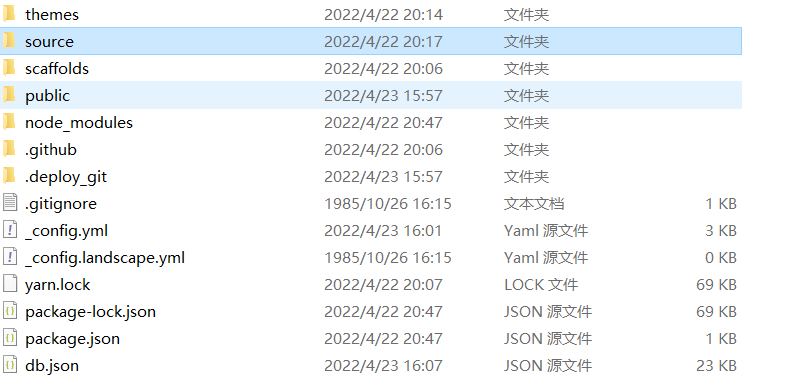
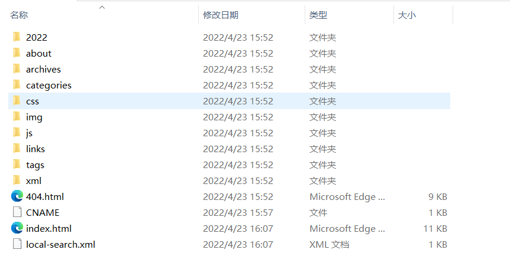
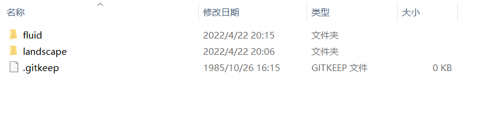
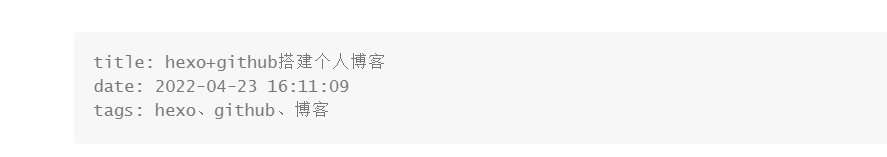
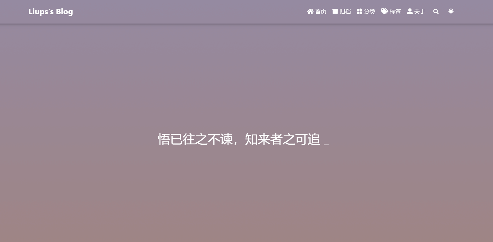

hexo+github搭建个人博客
1.前言
1.1.准备工作
开始之前，你需要具备以下条件
- 注册github账号
- 安装了node.js、npm，了解基础使用方法
- 安装并配置了git
本文所用的环境
- windows10
- node.js@v12.19.0
- git@2.35.1
- hexo@4.3.0
2.搭建github博客
2.1.创建仓库
新建一个名为username.github.io的仓库，其中username为自己设置的用户名，比如说，如果你的github用户名是test，那么你就新建test.github.io的仓库（必须是你的用户名，其它名称无效），将来你的网站访问地址就是 http://test.github.io 了，每一个github账户最多只能创建一个这样可以直接使用域名访问的仓库。
注意：
- 注册的邮箱一定要验证，否则不会成功；
- 仓库创建成功不会立即生效，需要过一段时间，大概10-30分钟，或者更久；
创建成功后，默认会在你这个仓库里生成一些示例页面，以后你的网站所有代码都是放在这个仓库里啦
2.2. 绑定域名
当然，你不绑定域名肯定也是可以的，就用默认的 xxx.github.io 来访问，如果你想更个性一点，想拥有一个属于自己的域名，那也是OK的。
本文使用的是阿里云的域名，想要域名的话可以自己去申请然后进行备案。
绑定域名分2种情况：带www和不带www的。
域名配置最常见有2种方式，CNAME和A记录，CNAME填写域名，A记录填写IP，由于不带www方式只能采用A记录，所以必须先ping一下你的用户名.github.io的IP，然后到你的域名DNS设置页，将A记录指向你ping出来的IP，将CNAME指向你的用户名.github.io，这样可以保证无论是否添加www都可以访问，如下：

然后到你的github项目根目录新建一个名为CNAME的文件（无后缀），里面填写你的域名，加不加www看你自己喜好，我自己是没有www的域名，所以更详细的情况可以参考(https://www.cnblogs.com/liuxianan/p/build-blog-website-by-hexo-github.html#%E6%90%AD%E5%BB%BAgithub%E5%8D%9A%E5%AE%A2)。
另外说一句，在你绑定了新域名之后，原来的你的用户名.github.io并没有失效，而是会自动跳转到你的新域名。
3.配置SSH key
为什么要配置这个呢？因为你提交代码肯定要拥有你的github权限才可以，但是直接使用用户名和密码太不安全了，所以我们使用ssh key来解决本地和服务器的连接问题。
1 | |
如果提示：No such file or directory 说明你是第一次使用git。
1 | |
然后连续3次回车，最终会生成一个文件在用户目录下，打开用户目录，找到.ssh\id_rsa.pub文件，记事本打开并复制里面的内容，打开你的github主页，进入个人设置 -> SSH and GPG keys -> New SSH key：
将刚复制的内容粘贴到key那里，title随便填，保存。
测试是否成功
1 | |
如果提示Are you sure you want to continue connecting (yes/no)?，输入yes，然后会看到：
You’ve successfully authenticated, but GitHub does not provide shell access.
看到这个信息说明SSH已配置成功！
此时你还需要配置：
1 | |
4.安装配置hexo
4.1.hexo简介
Hexo是一个简单、快速、强大的基于 Github Pages 的博客发布工具，支持Markdown格式，有众多优秀插件和主题。
官网： http://hexo.io
github: https://github.com/hexojs/hexo
4.2. 原理
由于github pages存放的都是静态文件，博客存放的不只是文章内容，还有文章列表、分类、标签、翻页等动态内容，假如每次写完一篇文章都要手动更新博文目录和相关链接信息，相信谁都会疯掉，所以hexo所做的就是将这些md文件都放在本地，每次写完文章后调用写好的命令来批量完成相关页面的生成，然后再将有改动的页面提交到github。
4.3. 注意事项
安装之前先来说几个注意事项：
- 很多命令既可以用Windows的cmd来完成，也可以使用git bash来完成，但是部分命令会有一些问题，为避免不必要的问题，建议全部使用git bash来执行；
- hexo不同版本差别比较大，网上很多文章的配置信息都是基于2.x的，所以注意不要被误导；
- hexo有2种
_config.yml文件，一个是根目录下的全局的_config.yml，一个是各个theme下的；
4.4. 安装
1 | |
4.5. 初始化
在电脑的某个地方新建一个名为hexo的文件夹（名字可以随便取），比如我的是D:\blog\hexo，由于这个文件夹将来就作为你存放代码的地方，所以最好不要随便放。
1 | |
hexo会自动下载一些文件到这个目录，包括node_modules，目录结构如下图：
1 | |
执行以上命令之后，hexo就会在public文件夹生成相关html文件，这些文件将来都是要提交到github去的：
hexo s是开启本地预览服务，打开浏览器访问 http://localhost:4000 即可看到内容，很多人会碰到浏览器一直在转圈但是就是加载不出来的问题，一般情况下是因为端口占用的缘故，因为4000这个端口太常见了，解决端口冲突问题请参考这篇文章：
http://blog.liuxianan.com/windows-port-bind.html
第一次初始化的时候hexo已经帮我们写了一篇名为 Hello World 的文章，默认的主题比较丑，可以替换一个自己喜欢的官方主题。
4.6.修改主题
个人比较喜欢fluid主题风格，可以参考用户手册来进行安装https://hexo.fluid-dev.com/docs/start/#%E4%B8%BB%E9%A2%98%E7%AE%80%E4%BB%8B。
下载好的主题会在themes文件夹里，如下:
如下修改 Hexo 博客目录中的 _config.yml，然后重新执行hexo g来重新生成。：
如果出现一些莫名其妙的问题，可以先执行hexo clean来清理一下public的内容，然后再来重新生成和发布。
4.7. 上传之前
在上传代码到github之前，一定要记得先把你以前所有代码下载下来（虽然github有版本管理，但备份一下总是好的），因为从hexo提交代码时会把你以前的所有代码都删掉。
4.8. 上传到github
如果你一切都配置好了，发布上传很容易，一句hexo d就搞定，当然关键还是你要把所有东西配置好。
首先，ssh key肯定要配置好。
其次，配置_config.yml中有关deploy的部分：
正确写法：
1 | |
错误写法：
1 | |
后面一种写法是hexo2.x的写法，现在已经不行了，无论是哪种写法，此时直接执行hexo d的话一般会报如下错误：
1 | |
原因是还需要安装一个插件：
1 | |
其它命令不确定，部署这个命令一定要用git bash，否则会提示Permission denied (publickey).
打开你的git bash，输入hexo d就会将本次有改动的代码全部提交，没有改动的不会：

4.9. 保留CNAME、README.md等文件
提交之后网页上一看，发现以前其它代码都没了，此时不要慌，一些非md文件可以把他们放到source文件夹下，这里的所有文件都会原样复制（除了md文件）到public目录的：

由于hexo默认会把所有md文件都转换成html，包括README.md，所有需要每次生成之后、上传之前，手动将README.md复制到public目录，并删除README.html。
4.10. 常用hexo命令
常见命令
1 | |
缩写：
1 | |
组合命令：
1 | |
4.11. _config.yml
这里面都是一些全局配置，每个参数的意思都比较简单明了，所以就不作详细介绍了。
需要特别注意的地方是，冒号后面必须有一个空格，否则可能会出问题。
4.12. 写博客
定位到我们的hexo根目录，执行命令：
1 | |
hexo会帮我们在_posts下生成相关md文件：
我们只需要打开这个文件就可以开始写博客了，默认生成如下内容：
当然你也可以直接自己新建md文件，用这个命令的好处是帮我们自动生成了时间。
一般完整格式如下：
1 | |
4.12.1. 如何让博文列表不显示全部内容
默认情况下，生成的博文目录会显示全部的文章内容，如何设置文章摘要的长度呢？
答案是在合适的位置加上<!--more-->即可，例如：
1 | |
5.插入图片
众所周知，在md文件中插入图片的语法为。
其中方括号是图片描述，圆括号是图片路径。
一般来说有三种图片路径，分别是相对路径，绝对路径和网络路径。
所谓的网络路径就是直接引用网上的图片，直接复制图片地址，放在圆括号中就完事了。
这种方式十分的方便，但是也存在一定的问题：
- 图片失效导致无法加载；
- 打开网页后要再请求加载图片；
- 原网站限制，如微信公众号的图片会变得不可见等。
这种方式算是有利有弊。
绝对路径是图片在计算机中的绝对位置，相对路径是相对于当前文件的路径。
由于我们的博客是要部署在网站上，部署后会生成新的文件目录，所以我们选择使用相对路径的方式。
在hexo中使用文章资源文件夹需要在config.yaml文件中更改一下配置：
1 | |
当该配置被应用后，使用hexo new命令创建新文章时，会生成相同名字的文件夹，也就是文章资源文件夹。
由于项目会生成新的文件目录，同时会解析Markdown中的图片路径，会导致一个问题。
如在一个文件目录下，博客名为
1.md，相应的存在一个1文件夹存放图片image.jpg。在Typora编辑器中，普通的md文件使用
能在编辑器中正常显示图片。在hexo中，按理说应该是使用
，但网页中却无法正常显示。此时应该使用这样的方式来引入图片：
{% asset_img image.jpg 这是一张图片 %}
虽然可以正常引用图片了，但是这种引用图片的方式在本地不能查看图片情况。。。
5.1.图片插件
插件hexo-renderer-marked解决了这个问题。可以只用npm install hexo-renderer-marked命令直接安装，之后在config.yaml中更改配置如下：
1 | |
之后就可以在使用的方式愉快的插入图片了。
5.2.hexo与Typora的完美结合
上述是从文章资源文件夹中引用图片，前提是先将图片放入到文章资源文件夹，如果图片数量众多的话，一张一张的放很影响效率。但是不用怕，我们有很方便的解决方法。
Typora对于插入图片的支持做得非常好，在文件->偏好设置或者直接<C-,>进入设置。
使用该配置后，可以直接复制网页中的图片地址，粘贴到Typora中后，会直接复制该图片到文章资源文件夹，同时自动更改路径。
如复制网络路径的图片https://...../image.jpg粘贴到Typora中叫文章名的文章后，图片会自动变为。
但我们知道部署后，文件路径是不同的，所以当我们插入完所有的图片后，我们还需要删除每个图片路径中的文件名/。不慌，也很简单。
在Typora编辑器中，使用<C-f>快捷键，将所有的文章名/替换为空即可删除。
然后再将博客上传，图片就会随着文章一起打包。在网页中就可以看到正常显示的图片，大功告成。
最终效果
本文主要是供自己学习用，当然也欢迎大家进行参考。
参考
hexo+github搭建博客:https://www.cnblogs.com/liuxianan/p/build-blog-website-by-hexo-github.html#%E6%90%AD%E5%BB%BAgithub%E5%8D%9A%E5%AE%A2
本博客所有文章除特别声明外，均采用 CC BY-SA 4.0 协议 ，转载请注明出处！